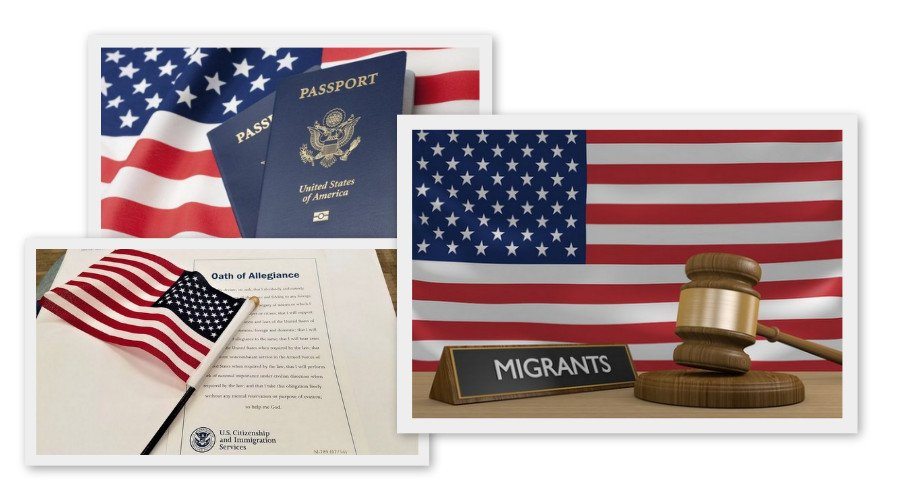

Сколько денег необходимо для переезда в США?
Примерная сумма, которая потребуется для переезда в Америку, зависит от количества
иммигрантов и личных
запросов.
Рассмотрим основные расходы, связанные с переездом.
Дорога
Большинство граждан вылетают в Нью-Йорк из Москвы или Санкт-Петербурга. Прямые рейсы выполняются различными
авиакомпаниями. Минимальная стоимость билета — 17 000 рублей. Рейсы с пересадками стоят дешевле. Современные
сервисы для подбора билетов вам в помощь.
Иммиграционный сбор
Эта плата взимается за изготовление и доставку Грин-Карты. Сбор рекомендуется оплатить до момента
пересечения
иностранной границы. Без оплаты иммигрант все-таки сможет въехать в США, однако изготовление Грин-Карты
начнется
только после внесения сбора. Размер пошлины составит от 16 000 до 17 000 рублей.
Для переезда в США необходимо накопить денег на дорогу, оформление документов, аренду
комнаты
и проживание
Жильё
Этот вопрос рекомендуется решить заранее. Временное или постоянное жилье находят на
специализированных сайтах. При
переезде в США на ПМЖ можно снять квартиру или комнату. Отдельный дом станет слишком дорогостоящим
удовольствием.
В свою очередь, аренда квартиры в Нью-Йорке обойдется от 90 000 до 100 000 рублей. При желании находят более
бюджетное жилье, но слишком дешевый вариант может обернуться обманом или совместным проживанием с
тараканами.
Аренда отдельной комнаты составит от 50 000 до 60 000 рублей. Цены будут меняться в зависимости от города и
района. Не забудьте ознакомиться со списком неблагоприятных районов США, где уровень высокий уровень
преступности.
Проживание
Здесь сложно обозначить точную сумму. Все будет зависеть от специальности, уровня владения английским языком
и
наличия американских друзей или родственников. Стартовая сумма для комфортного переезда составляет примерно
500
тысяч рублей. Бывали случаи, когда в кармане у иммигранта было всего 100 000 рублей.
Способы переезда в США
Желающие жить и работать в Америке должны выбрать подходящий способ переезда.
Получить Грин-Карту через лотерею
Каждый год США организует лотерею, победители которой получают Грин-Карту. Шансы довольно велики, на кону 50
000
удостоверений. Для участия в мероприятии предстоит заполнить анкету в октябре или ноябре. Бланк находится в
Интернете на специализированном сайте. Список победителей оглашают в мае. Счастливчиков выбирает компьютер.
По приглашению от работодателя
С оформлением рабочей визы помогает компания, в которой иммигрант успешно прошел собеседование.
Этот
документ
может быть двух видов:
- Н1В — получают квалифицированные сотрудники. Срок действия три года. Подготовкой документов на визу
занимается
работодатель, которому еще предстоит доказать необходимость привлечения работника из России.
- L1 — документ, который получают работники высшего звена. Цель переезда — открытие филиалов собственной
компании на территории Америки. Главные условия — высокий годовой оборот и не меньше трех работников в
штате.
Потребуются немалые усилия для подготовки документов. Зато владелец прибыльного филиала в Америке имеет
право
продлить рабочую визу.
Нетрадиционная сексуальная ориентация
Геи, права которых ущемляются на Родине, могут претендовать на получение убежища в США.
Представителю
нетрадиционной ориентации предстоит посетить США в качестве туриста. Во время поездки подается заявление в
соответствующую организацию. Получить одобрение на переезд в Америку смогут геи, которые официально докажут
притеснение своих прав в стране проживания. Документальной базой станут бумаги, которые подтверждают факт
избиения
или насилия в отношении представителей сексуальных меньшинств. По результатам собеседования выносится
решение о
возможности проживания иностранного гея в США.
Виза для одаренных людей
Такой документ могут получить люди с выдающимися способностями. Виза формы О1 может
быть выдана спортсменам,
музыкантам, ученым, актерам, писателям, бизнесменам и т.д. Пакет документов на эту рабочую визу готовит
американец, который готов принять выдающуюся личность на работу. В качестве доказательств предъявляются
дипломы,
сертификаты, публикации, видео-и аудиозаписи и иные результаты своего творчества. Решение принимается в
течение
нескольких месяцев.
Миграционные адвокаты предлагают услугу по составлению пакета документов на визу О1. Воспользоваться
предложением
может даже человек с минимальными талантами. Основная задача «одаренной личности» уметь вести беседу и
действовать
согласно инструкции адвоката.
Претендовать на политическое убежище
Такой способ переезда в США требует предоставления основательных доказательств. Потенциальный иммигрант
должен
убедить принимающую сторону, что личное благополучие находится под угрозой. В качестве притесняющих лиц
могут
выступать страна или недоброжелатели. Одним из главных аргументов станет бездействие со стороны полиции.
Почвой
для конфликтов являются политические, национальные или религиозные вопросы. Решение принимается после
тщательной
проверки предоставленной информации.
Бракосочетание с гражданином США
В случае брака по любви с жителем Америки вопрос о переезде решается довольно просто. При отсутствии
денежной
составляющей в браке иммигранту не придется платить партнеру за игру в супружескую жизнь. Петиция часто
одобряется, и супруги совместно живут в одной стране.
При отсутствии американского партнера некоторые идут на крайние меры — заключают фиктивный брак. Схема
элементарная: за оформление брачного союза «любимому» супругу предлагается денежное вознаграждение.
Партнеры
ведут
совместное хозяйство. Документы на развод подаются через несколько лет.
Внимание! Фиктивный брак в США преследуется по закону. Участникам сговора может грозить тюремное
заключение
или
огромный штраф. Помимо этого при поиске фиктивного супруга существует большая вероятность встречи с
мошенником.
Заключение брака с американцем — один из самых распространенных способов переезда в США
Виза физически или психологически пострадавшего гражданина
Осуществить переезд в США по визе формы U могут лица, которые стали потерпевшими или свидетелями серьезного
правонарушения в Америке. К таким преступлениям относится изнасилование, похищение или убийство.
США готовы одобрить вид на жительство при условии активного участия гражданина в раскрытии преступного
деяния.
Документ действителен в течение четырех лет, по истечение которых можно претендовать на получение Зеленой
Карты.
Воссоединение семьи
Такой способ переезда в Америку подойдет тем, у кого родственники являются гражданами этой
страны. Подача
семейной
петиции поможет оформить Грин-Карту. К числу родственников в таком случае относят родителей, детей,
супругов,
родных сестер и братьев. Оформлением документов будет заниматься американский родственник.
Процедура имеет упрощенный характер. К иммигранту не выдвигаются особые требования. Без
привлечения
адвоката
оформление такой визы — относительно бюджетный вариант. Иногда сроки рассмотрения петиции растягиваются до
нескольких лет.
Продление туристической визы
При истечении срока туристической визы можно подать заявление на повторную выдачу. Иногда путешественник
даже
освобождается от повторного собеседования. Основные требования: внесение консульского сбора любым возможным
способом и оформление прошения. Готовый пакет документов подается в соответствующее ведомство. Новая виза
выдается
при условии положительного рассмотрения заявления.
Студенческая виза для учебы в Америке
Такой документ имеет форму F1 и пригодится на случай обучения в высших учебных заведениях
Америки.
Оформление
документа займет длительный период. Студенту предстоит собрать подробное портфолио с личными достижениями в
образовательной сфере. Во время собеседования в посольстве кандидату предстоит продемонстрировать желание
учиться
на территории США.
Покупка недвижимости
Не стоит полагать, что владелец недвижимости в Америке может автоматически получить вид на жительство.
Такому
гражданину разрешается находиться на территории США в течение 30 дней ежегодно. Это касается покупки жилых
объектов. При покупке коммерческой недвижимости появляется шанс на получение ВНЖ.
Рождение ребенка в США
Человек, который родился в этой стране, автоматически получает американское гражданство. В этом случае
гражданство
матери и отца не будет иметь значение. Единственное условие — роды должны состояться на территории Америки.
Ребенок имеет возможность самостоятельно выбрать гражданство. Переезд в Америку родителей может быть
оформлен
только после наступления совершеннолетия ребенка. До этого момента родители не имеют преимущества при смене
места
жительства.
Чем грозит нелегальный переезд в Америку?
Переезд в США должен происходить исключительно легальным образом. За нарушение миграционного
режима
предусмотрены
следующие виды наказаний:
- Административное взыскание в виде штрафа или наложения запрета на пересечение границы.
- Уголовное наказание предусматривает тюремное заключение.

Нелегальный переезд в Америку грозит административной или уголовной ответственностью
Степень наказания определяется периодом нелегального пребывания на территории США. Помимо этого
наказание будет
ужесточено при обнаружении следующих факторов:
- Повторные попытки нелегального пересечения границы.
- Попытки возвращения после депортации.
- Нелегальная трудовая деятельность в США.
- Участие в фиктивном браке.
- Подделка документов при оформлении визы.
- Прошлые судимости.